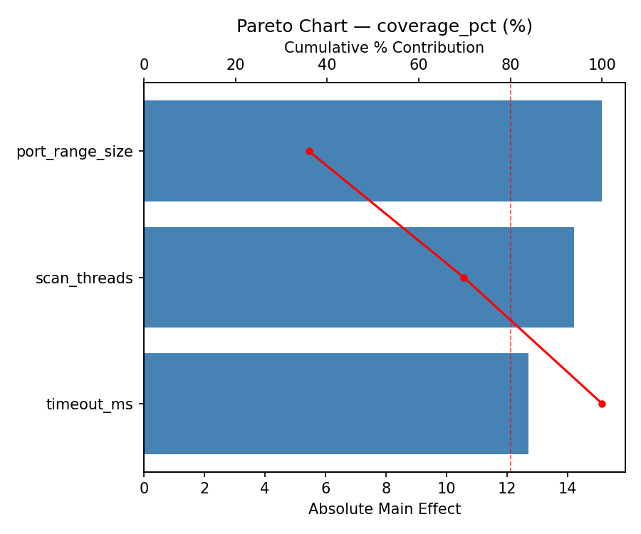
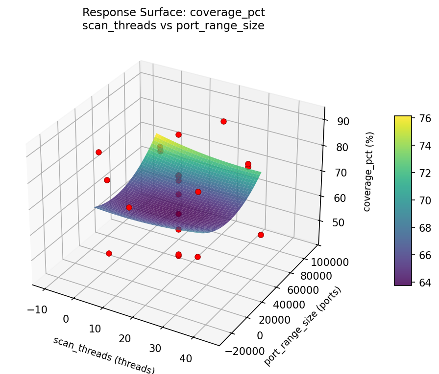
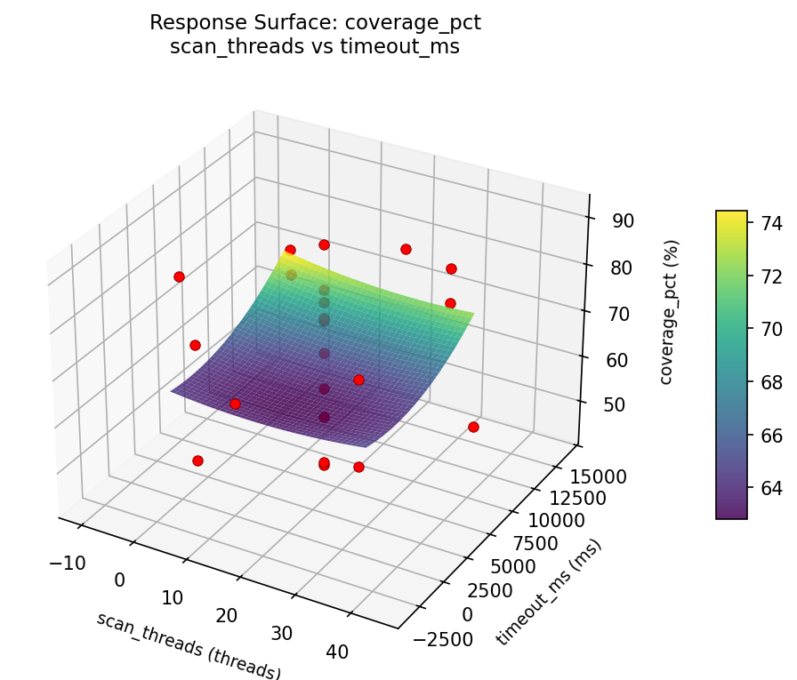
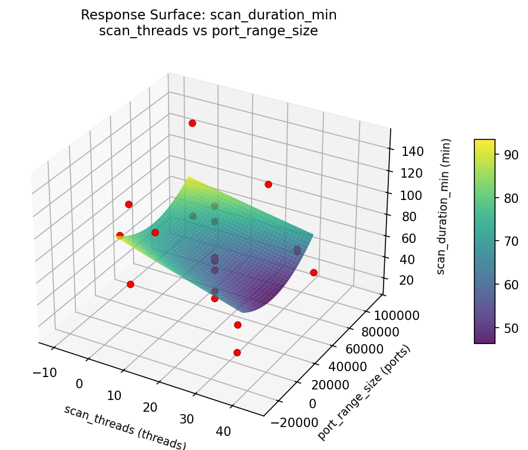
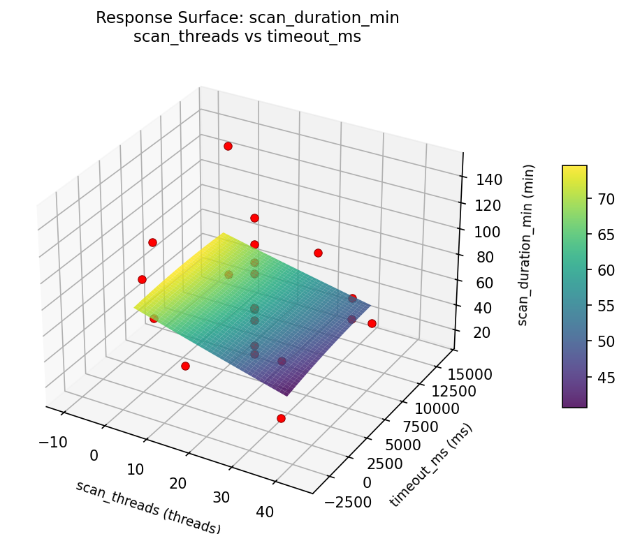

Summary
This experiment investigates vulnerability scan scheduling. Central Composite design to optimize scan threads, port range, and timeout for scan duration and coverage.
The design varies 3 factors: scan threads (threads), ranging from 2 to 32, port range size (ports), ranging from 100 to 65535, and timeout ms (ms), ranging from 500 to 10000. The goal is to optimize 2 responses: scan duration min (min) (minimize) and coverage pct (%) (maximize). Fixed conditions held constant across all runs include scanner = openvas, target network = 10.0.0.0/16.
A Central Composite Design (CCD) was selected to fit a full quadratic response surface model, including curvature and interaction effects. With 3 factors this produces 22 runs including center points and axial (star) points that extend beyond the factorial range.
Quadratic response surface models were fitted to capture potential curvature and factor interactions. The RSM contour plots below visualize how pairs of factors jointly affect each response.
Key Findings
For scan duration min, the most influential factors were timeout ms (52.1%), scan threads (33.2%), port range size (14.7%). The best observed value was 14.6 (at scan threads = 44.3861, port range size = 32817.5, timeout ms = 5250).
For coverage pct, the most influential factors were scan threads (48.8%), timeout ms (27.8%), port range size (23.4%). The best observed value was 91.3 (at scan threads = 32, port range size = 65535, timeout ms = 500).
Recommended Next Steps
- Run confirmation experiments at the predicted optimal settings to validate the model.
- Consider whether any fixed factors should be varied in a future study.
Experimental Setup
Factors
| Factor | Low | High | Unit |
|---|
scan_threads | 2 | 32 | threads |
port_range_size | 100 | 65535 | ports |
timeout_ms | 500 | 10000 | ms |
Fixed: scanner = openvas, target_network = 10.0.0.0/16
Responses
| Response | Direction | Unit |
|---|
scan_duration_min | ↓ minimize | min |
coverage_pct | ↑ maximize | % |
Configuration
{
"metadata": {
"name": "Vulnerability Scan Scheduling",
"description": "Central Composite design to optimize scan threads, port range, and timeout for scan duration and coverage"
},
"factors": [
{
"name": "scan_threads",
"levels": [
"2",
"32"
],
"type": "continuous",
"unit": "threads"
},
{
"name": "port_range_size",
"levels": [
"100",
"65535"
],
"type": "continuous",
"unit": "ports"
},
{
"name": "timeout_ms",
"levels": [
"500",
"10000"
],
"type": "continuous",
"unit": "ms"
}
],
"fixed_factors": {
"scanner": "openvas",
"target_network": "10.0.0.0/16"
},
"responses": [
{
"name": "scan_duration_min",
"optimize": "minimize",
"unit": "min"
},
{
"name": "coverage_pct",
"optimize": "maximize",
"unit": "%"
}
],
"settings": {
"operation": "central_composite",
"test_script": "use_cases/60_vulnerability_scan_scheduling/sim.sh"
}
}
Experimental Matrix
The Central Composite Design produces 22 runs. Each row is one experiment with specific factor settings.
| Run | scan_threads | port_range_size | timeout_ms |
|---|
| 1 | 17 | 32817.5 | 5250 |
| 2 | 32 | 100 | 10000 |
| 3 | 2 | 65535 | 500 |
| 4 | 17 | 92551.2 | 5250 |
| 5 | 17 | 32817.5 | 5250 |
| 6 | -10.3861 | 32817.5 | 5250 |
| 7 | 17 | 32817.5 | -3422.27 |
| 8 | 17 | 32817.5 | 5250 |
| 9 | 32 | 65535 | 500 |
| 10 | 44.3861 | 32817.5 | 5250 |
| 11 | 17 | 32817.5 | 5250 |
| 12 | 17 | -26916.2 | 5250 |
| 13 | 17 | 32817.5 | 5250 |
| 14 | 2 | 100 | 10000 |
| 15 | 17 | 32817.5 | 5250 |
| 16 | 32 | 100 | 500 |
| 17 | 17 | 32817.5 | 13922.3 |
| 18 | 32 | 65535 | 10000 |
| 19 | 17 | 32817.5 | 5250 |
| 20 | 2 | 100 | 500 |
| 21 | 2 | 65535 | 10000 |
| 22 | 17 | 32817.5 | 5250 |
Step-by-Step Workflow
1
Preview the design
$ python doe.py info --config use_cases/60_vulnerability_scan_scheduling/config.json
2
Generate the runner script
$ python doe.py generate --config use_cases/60_vulnerability_scan_scheduling/config.json \
--output use_cases/60_vulnerability_scan_scheduling/results/run.sh --seed 42
3
Execute the experiments
$ bash use_cases/60_vulnerability_scan_scheduling/results/run.sh
4
Analyze results
$ python doe.py analyze --config use_cases/60_vulnerability_scan_scheduling/config.json
5
Get optimization recommendations
$ python doe.py optimize --config use_cases/60_vulnerability_scan_scheduling/config.json
6
Multi-objective optimization
With 2 competing responses, use --multi to find the best compromise via Derringer–Suich desirability.
$ python doe.py optimize --config use_cases/60_vulnerability_scan_scheduling/config.json --multi
7
Generate the HTML report
$ python doe.py report --config use_cases/60_vulnerability_scan_scheduling/config.json \
--output use_cases/60_vulnerability_scan_scheduling/results/report.html
Features Exercised
| Feature | Value |
|---|
| Design type | central_composite |
| Factor types | continuous (all 3) |
| Arg style | double-dash |
| Responses | 2 (scan_duration_min ↓, coverage_pct ↑) |
| Total runs | 22 |
Analysis Results
Generated from actual experiment runs using the DOE Helper Tool.
Response: scan_duration_min
Top factors: timeout_ms (52.1%), scan_threads (33.2%), port_range_size (14.7%).
Pareto Chart

Main Effects Plot

Response: coverage_pct
Top factors: scan_threads (48.8%), timeout_ms (27.8%), port_range_size (23.4%).
Pareto Chart

Main Effects Plot

Response Surface Plots
3D surfaces fitted with quadratic RSM. Red dots are observed data points.
coverage pct port range size vs timeout ms

coverage pct scan threads vs port range size

coverage pct scan threads vs timeout ms

scan duration min port range size vs timeout ms

scan duration min scan threads vs port range size

scan duration min scan threads vs timeout ms

Multi-Objective Optimization
When responses compete, Derringer–Suich desirability finds the best compromise.
Each response is scaled to a 0–1 desirability, then combined via a weighted geometric mean.
Overall Desirability
D = 0.7874
Per-Response Desirability
| Response | Weight | Desirability | Predicted | Dir |
|---|
scan_duration_min |
1.0 |
|
40.50 0.7780 40.50 min |
↓ |
coverage_pct |
1.5 |
|
82.90 0.7938 82.90 % |
↑ |
Recommended Settings
| Factor | Value |
|---|
scan_threads | 17 threads |
port_range_size | 32817.5 ports |
timeout_ms | 5250 ms |
Source: from observed run #2
Trade-off Summary
Sacrifice = how much worse than single-objective best.
| Response | Predicted | Best Observed | Sacrifice |
|---|
coverage_pct | 82.90 | 91.30 | +8.40 |
Top 3 Runs by Desirability
| Run | D | Factor Settings |
|---|
| #10 | 0.7073 | scan_threads=-10.3861, port_range_size=32817.5, timeout_ms=5250 |
| #18 | 0.6781 | scan_threads=17, port_range_size=32817.5, timeout_ms=-3422.27 |
Model Quality
| Response | R² | Type |
|---|
coverage_pct | 0.0319 | linear |
Full Multi-Objective Output
============================================================
MULTI-OBJECTIVE OPTIMIZATION
Method: Derringer-Suich Desirability Function
============================================================
Overall desirability: D = 0.7874
Response Weight Desirability Predicted Direction
---------------------------------------------------------------------
scan_duration_min 1.0 0.7780 40.50 min ↓
coverage_pct 1.5 0.7938 82.90 % ↑
Recommended settings:
scan_threads = 17 threads
port_range_size = 32817.5 ports
timeout_ms = 5250 ms
(from observed run #2)
Trade-off summary:
scan_duration_min: 40.50 (best observed: 14.60, sacrifice: +25.90)
coverage_pct: 82.90 (best observed: 91.30, sacrifice: +8.40)
Model quality:
scan_duration_min: R² = 0.1356 (linear)
coverage_pct: R² = 0.0319 (linear)
Top 3 observed runs by overall desirability:
1. Run #2 (D=0.7874): scan_threads=17, port_range_size=32817.5, timeout_ms=5250
2. Run #10 (D=0.7073): scan_threads=-10.3861, port_range_size=32817.5, timeout_ms=5250
3. Run #18 (D=0.6781): scan_threads=17, port_range_size=32817.5, timeout_ms=-3422.27
Full Analysis Output
=== Main Effects: scan_duration_min ===
Factor Effect Std Error % Contribution
--------------------------------------------------------------
timeout_ms 60.8750 7.2297 52.1%
scan_threads 38.8000 7.2297 33.2%
port_range_size 17.2250 7.2297 14.7%
=== ANOVA Table: scan_duration_min ===
Source DF SS MS F p-value
-----------------------------------------------------------------------------
scan_threads 4 2067.6570 516.9142 0.404 0.8013
port_range_size 4 685.2995 171.3249 0.134 0.9658
timeout_ms 4 3254.4795 813.6199 0.636 0.6496
Lack of Fit 2 9188.6877 4594.3439 3.592 0.0844
Pure Error 7 8952.2400 1278.8914
Error 9 18140.9277 1278.8914
Total 21 24148.3636 1149.9221
=== Summary Statistics: scan_duration_min ===
scan_threads:
Level N Mean Std Min Max
------------------------------------------------------------
-10.3861 1 95.1000 0.0000 95.1000 95.1000
17 12 63.8833 32.7361 14.6000 128.9000
2 4 82.9000 46.8724 47.5000 148.0000
32 4 62.8500 35.1259 23.5000 109.0000
44.3861 1 56.3000 0.0000 56.3000 56.3000
port_range_size:
Level N Mean Std Min Max
------------------------------------------------------------
-26916.2 1 62.0000 0.0000 62.0000 62.0000
100 4 66.5250 28.8042 47.5000 109.0000
32817.5 12 65.1417 33.9640 14.6000 128.9000
65535 4 79.2250 52.5513 23.5000 148.0000
92551.2 1 74.3000 0.0000 74.3000 74.3000
timeout_ms:
Level N Mean Std Min Max
------------------------------------------------------------
-3422.27 1 14.6000 0.0000 14.6000 14.6000
10000 4 70.2750 54.0248 23.5000 148.0000
13922.3 1 58.5000 0.0000 58.5000 58.5000
500 4 75.4750 27.6069 47.5000 109.0000
5250 12 70.4083 29.9263 30.1000 128.9000
=== Main Effects: coverage_pct ===
Factor Effect Std Error % Contribution
--------------------------------------------------------------
scan_threads 24.7500 2.7406 48.8%
timeout_ms 14.1000 2.7406 27.8%
port_range_size 11.9000 2.7406 23.4%
=== ANOVA Table: coverage_pct ===
Source DF SS MS F p-value
-----------------------------------------------------------------------------
scan_threads 4 574.0265 143.5066 0.665 0.6319
port_range_size 4 300.5965 75.1491 0.348 0.8389
timeout_ms 4 368.7465 92.1866 0.427 0.7857
Lack of Fit 2 716.4286 358.2143 1.660 0.2569
Pure Error 7 1510.1750 215.7393
Error 9 2226.6036 215.7393
Total 21 3469.9732 165.2368
=== Summary Statistics: coverage_pct ===
scan_threads:
Level N Mean Std Min Max
------------------------------------------------------------
-10.3861 1 91.3000 0.0000 91.3000 91.3000
17 12 68.1833 12.4149 43.8000 82.9000
2 4 69.0000 16.9381 44.3000 81.9000
32 4 66.5500 10.6428 54.5000 75.8000
44.3861 1 76.0000 0.0000 76.0000 76.0000
port_range_size:
Level N Mean Std Min Max
------------------------------------------------------------
-26916.2 1 73.7000 0.0000 73.7000 73.7000
100 4 63.0500 16.3190 44.3000 77.6000
32817.5 12 70.8333 13.9332 43.8000 91.3000
65535 4 72.5000 8.8502 60.7000 81.9000
92551.2 1 61.8000 0.0000 61.8000 61.8000
timeout_ms:
Level N Mean Std Min Max
------------------------------------------------------------
-3422.27 1 58.2000 0.0000 58.2000 58.2000
10000 4 63.2500 14.1799 44.3000 75.8000
13922.3 1 68.3000 0.0000 68.3000 68.3000
500 4 72.3000 12.1861 54.5000 81.9000
5250 12 71.5833 13.6599 43.8000 91.3000
Optimization Recommendations
=== Optimization: scan_duration_min ===
Direction: minimize
Best observed run: #16
scan_threads = 44.3861
port_range_size = 32817.5
timeout_ms = 5250
Value: 14.6
RSM Model (linear, R² = 0.3455, Adj R² = 0.2364):
Coefficients:
intercept +68.2273
scan_threads -10.2580
port_range_size +8.9312
timeout_ms +19.5932
RSM Model (quadratic, R² = 0.5275, Adj R² = 0.1731):
Coefficients:
intercept +63.2365
scan_threads -10.2580
port_range_size +8.9312
timeout_ms +19.5932
scan_threads*port_range_size +2.8375
scan_threads*timeout_ms -12.8875
port_range_size*timeout_ms +11.0875
scan_threads^2 -0.1646
port_range_size^2 -1.9196
timeout_ms^2 +9.5704
Curvature analysis:
timeout_ms coef=+9.5704 convex (has a minimum)
port_range_size coef=-1.9196 concave (has a maximum)
scan_threads coef=-0.1646 concave (has a maximum)
Notable interactions:
scan_threads*timeout_ms coef=-12.8875 (antagonistic)
port_range_size*timeout_ms coef=+11.0875 (synergistic)
scan_threads*port_range_size coef=+2.8375 (synergistic)
Predicted optimum (from linear model, at observed points):
scan_threads = 2
port_range_size = 65535
timeout_ms = 10000
Predicted value: 107.0097
Surface optimum (via L-BFGS-B, linear model):
scan_threads = 32
port_range_size = 100
timeout_ms = 500
Predicted value: 29.4448
Model quality: Weak fit — consider adding center points or using a different design.
Factor importance:
1. timeout_ms (effect: 107.5, contribution: 45.3%)
2. scan_threads (effect: 94.4, contribution: 39.8%)
3. port_range_size (effect: 35.2, contribution: 14.8%)
=== Optimization: coverage_pct ===
Direction: maximize
Best observed run: #18
scan_threads = 32
port_range_size = 65535
timeout_ms = 500
Value: 91.3
RSM Model (linear, R² = 0.1086, Adj R² = -0.0400):
Coefficients:
intercept +69.4409
scan_threads +3.8833
port_range_size +3.2371
timeout_ms +0.3589
RSM Model (quadratic, R² = 0.4574, Adj R² = 0.0504):
Coefficients:
intercept +68.3988
scan_threads +3.8833
port_range_size +3.2371
timeout_ms +0.3589
scan_threads*port_range_size +6.2750
scan_threads*timeout_ms -5.6500
port_range_size*timeout_ms +3.4000
scan_threads^2 -1.8639
port_range_size^2 -1.0689
timeout_ms^2 +4.4960
Curvature analysis:
timeout_ms coef=+4.4960 convex (has a minimum)
scan_threads coef=-1.8639 concave (has a maximum)
port_range_size coef=-1.0689 concave (has a maximum)
Notable interactions:
scan_threads*port_range_size coef=+6.2750 (synergistic)
scan_threads*timeout_ms coef=-5.6500 (antagonistic)
port_range_size*timeout_ms coef=+3.4000 (synergistic)
Predicted optimum (from quadratic model, at observed points):
scan_threads = 32
port_range_size = 65535
timeout_ms = 500
Predicted value: 85.2484
Surface optimum (via L-BFGS-B, quadratic model):
scan_threads = 32
port_range_size = 65535
timeout_ms = 500
Predicted value: 85.2484
Model quality: Weak fit — consider adding center points or using a different design.
Factor importance:
1. port_range_size (effect: 31.3, contribution: 41.0%)
2. scan_threads (effect: 26.6, contribution: 34.9%)
3. timeout_ms (effect: 18.4, contribution: 24.1%)